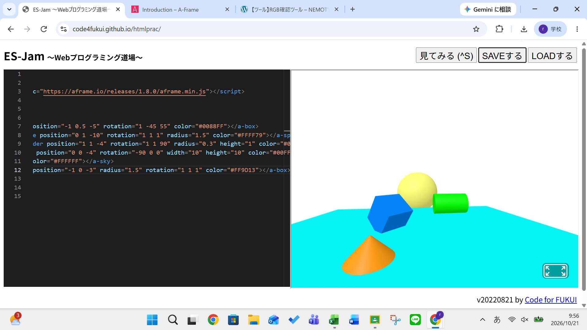
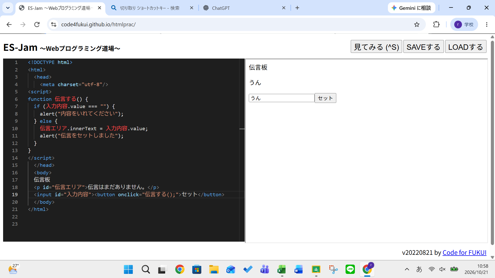

３週目のレポート ： 公大高専１年実習I-1
4b班38番 マイケル
第3週目
3-1 JavaScript体験：VR空間を作る

自作した３次元空間
1.内容
ES-Jam 〜Webプログラミング道場〜を使いA-Frameでつくられた3D空間に描かれた立体図形の位置や向きなどを
編集した。そしてプログラムするときに使った単語の説明を受けた。
2.感想
意外と操作の内容は理解することができたが、プログラムの単語などが英語で書かれているため、あまり英語は
得意ではないが、工学で使う単語や簡単な英語は理解できるようになりたいと思った。
3-2 JavaScript体験：伝言プログラムを作る

伝言板
1.内容
ES-Jam 〜Webプログラミング道場〜を使い、実際に伝言プログラムを自分たちでマニュアル通りに書いた。
そして一つ一つのプログラムの役割や簡単な操作について学んだ。
2.感想
マニュアル通りに進めていくうえで「この記号や単語は存在しないといけないものなのか」と思ったが、
1つ記号が抜けているだけで正常な動作が行われなかったため必要なものだということがわかった。
各ページへのリンク
1週目のレポート
2週目のレポート
3週目のレポート
私のホームページ